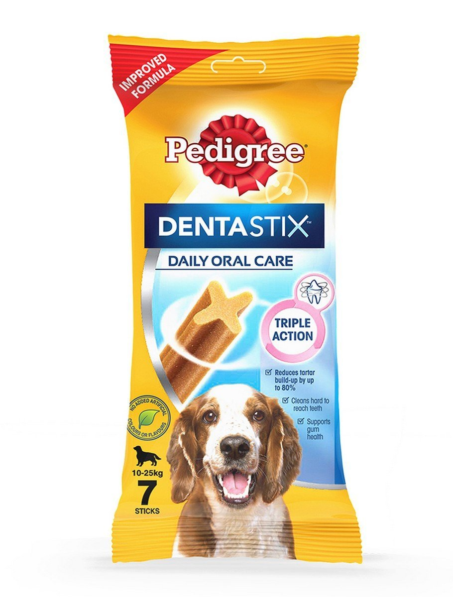
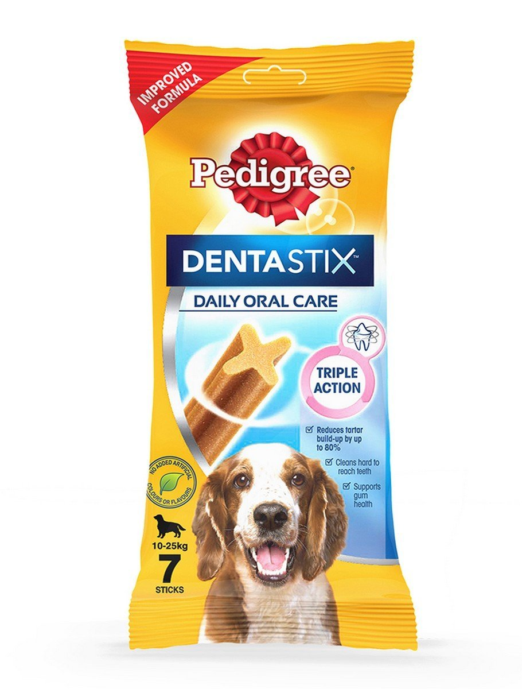
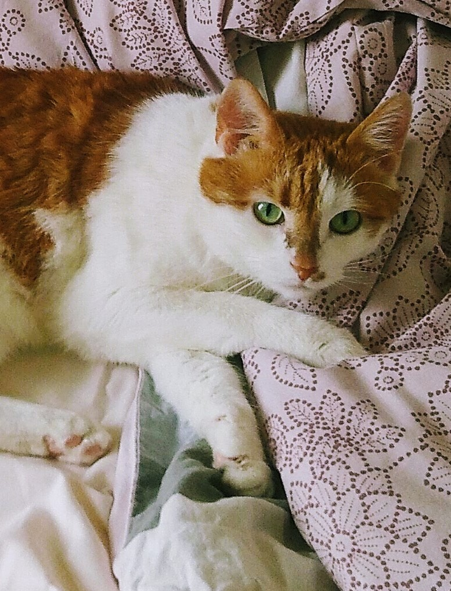

DOG TREAT REVIEW: DENTASTIX
Find out what the terriers think about this classic.
READ MORE
Who are the terriers anyway? Let's find out!
Find out what the terriers think about this classic.
READ MOREDog parks can be a great opportunity for dogs to run around and meet other dogs. What do Odette and Tuutikki think?
READ MOREThere are two dogs, but first, there was a cat. Who is the mysterious Armi?
READ MOREThe 11-year-old Jack-Cairn terrier Odette has quite a thick fur that can be a nuisance during the hot summer months. Join us for a trip to the trimmer!
READ MORE